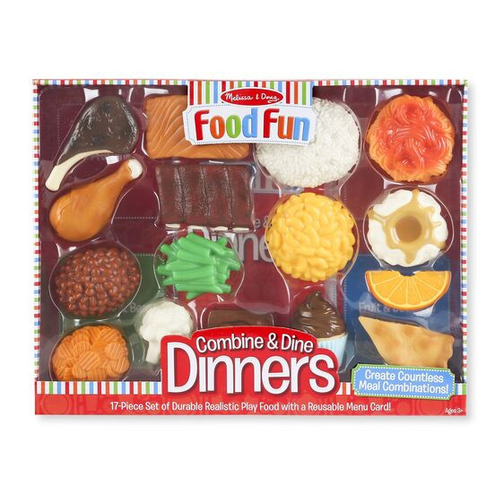
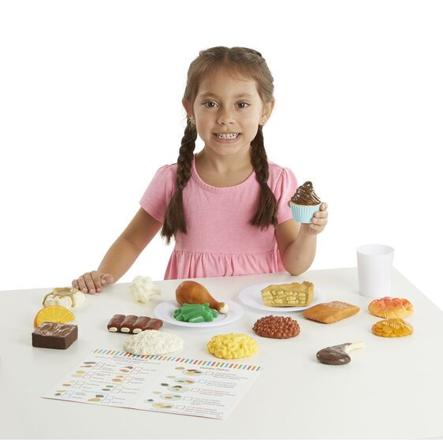

Available
Combine and Dine Dinners - Red (Plastic)
Pretend Play
R60017-piece play set of durable realistic play food with write-on reusable menu Includes 4 proteins, 4 vegetables and beans, 4 grains and starches, 4 desserts, and 4-sided, write-on menu Solid plastic food pieces are realistically detailed Perfect addition to pretend play kitchens, restaurants, and pantries Product: 11.5
Enquire about this product
Combine and Dine Dinners - Red (Plastic) at Kids Corner KZN
Combine and Dine Dinners - Red (Plastic) is part of our Pretend Play collection. Kids Corner KZN stocks toys for learning, pretend play, creative play, gifting and everyday childhood discovery in South Africa.
Browse more Pretend Play toys